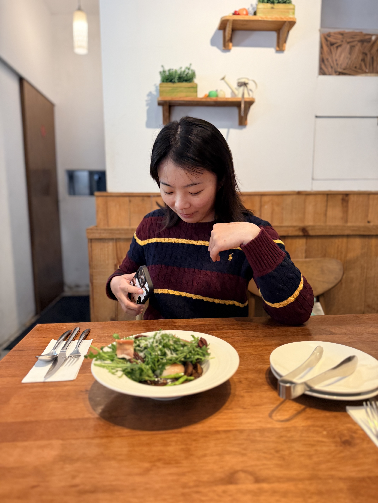

海上的擦身
認識之前，我們的船曾在海上擦身——妳往石垣島，我正回烏石港。遠遠望著對方的帆，卻不知道那個人就在上面。後來才發現，我們早就見過了。

2025.12.11 - 2026.06.28
因為一艘帆船認識妳，後來我們一起去了海邊、上了島、走了歐洲，也把平凡的每一天，慢慢過成我們的樣子。
Our Course
認識之前，我們的船曾在海上擦身——妳往石垣島，我正回烏石港。遠遠望著對方的帆，卻不知道那個人就在上面。後來才發現，我們早就見過了。
我們因為帆船認識。那天只是個很小的起點，後來卻變成好多趟一起的旅程。
第一次一起出遠門，海風把剛認識的生疏，慢慢吹成很自然的陪伴。
風、浪、船，還有妳。我想那是我們最像自己的時候。
有貓的午後、一起去遠方，也把好多畫面，一張張收進生活裡。



Places We Kept
Chapter 01
海、風景，還有那時候開始越靠越近的我們。
Chapter 02
我們從一艘帆船開始認識，後來真的一起把船開向了島。
Chapter 03
一起走了好遠的路，看陌生的城市，也把每一天都過成我們自己的版本。
Chapter 04
旅行會被記得，日常也會。一起吃飯、有貓在旁邊，過一個又一個普通的下午。
Moving Memory
For You
小雪，從 2025 年 12 月 11 日認識妳，到今天剛好第 200 天，時間真的過得好快。 一百天的時候我跟妳說過，謝謝我們一起努力，克服了那段還不懂彼此的時間； 妳為我做的改變，我都有看到，也一直記在心裡。
這兩百天裡，我們也吵過架，有時候真的很崩潰； 但每一次，我們最後都能好好和好。回過頭看，我反而覺得自己在這段關係裡，慢慢長成了更好的樣子。
我很喜歡我們現在相處的方式。喜歡和妳在船上，喜歡和妳在路上， 也喜歡有妳、有貓，把平凡日子一起過好的樣子。
歐洲走過了，以後還想和妳去更多地方旅行，把日子一起慢慢走。 最喜歡的大寶貝，我會好好照顧妳的❤️
把這份回憶下載到電腦 回到最上面